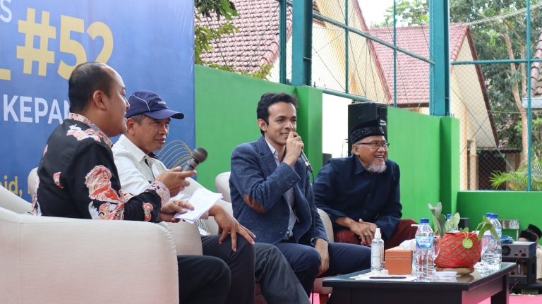

MENJADI TUAN RUMAH DOKTER GAMAL GOES TO SCHOOL #53 MEMBENTUK MENTAL SIAP KERJA SISWA SMKN 1 KEPANJEN

14 Oktober 2022. Jum’at (14/10) SMKN 1 Kepajen dikunjungi oleh mativator viral dr. Gamal Albinsaid, M.Biomed dalam acara Gamal Goes to School #53. Beliau adalah seorang inovator kesehatan, sekaligus social entrepreneur yang pertama kali mencetuskan Klinik Asuransi Sampah atau Garbage Clinical Insurance bagi masyarakat kurang mampu. Didampingi oleh Bapak Kepala Sekolah dan Ketua Komite dr. Gamal menyampaikan sambutan kepada siswa-siswi dan dewan guru Kanesa.Materi yang disampaikan oleh dr. Gamal bertemakan Siap Lulus, Siap Kerja, Siap Berjaya. Fudamental ini adalah poin yang penting bagi persiapan siswa-siswi SMK untuk memiliki kesiapan bekerja setelah lulus. dr. Gamal menyampaikan hal hal mendasar mengenai mindset untuk siap kerja dengan dimulai dari hal-hal kecil. Beliau menyampaikan bahwa “dengan tidak berhenti belajar, maka akan terbentuk mindset kerja yang kuat”.